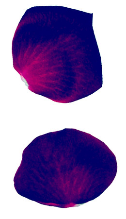
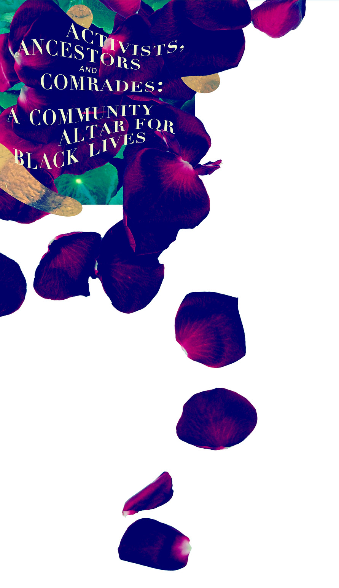

Activists, Ancestors and Comrades
A Community Altar for Black Lives
September 4 - October 2, 2020
Artists: Heesoo Kwon, Cathy Lu, Yétundé Olagbaju, Tracy Ren, Sherwin Rio, Jas Spitzer Smith, Tosha Stimage, Andrew Sungtaek, Jess Young
Dream Farm Commons (DFC) will host a collaborative installation in the form of an altar for Black Lives, created by 9 Asian, Asian American and Black artists based in the Bay Area. In the tall store front windows of Dream Farm Commons the Altar will serve as a physical and communal space for solidarity, a space for grieving and remembering, and a reminder of the future we are fighting for and the lives we must uplift, celebrate and protect.
We are located in downtown Oakland, blocks away from Oscar Grant Plaza, a location central to the many actions that have occurred in Oakland this Summer and in the past. We are printing flyers in different languages to invite community members to bring flowers, photos, candles, mementos, sound bytes, and anything else that will aid in the grieving of what and who we've already lost.
This installation is not intended to emphasize suffering, but instead to highlight our collective strength, "to help us (re)construct identity and take our dead with us to the various battles we must wage in their names—and in our names" — Jose Esteban Muñoz
